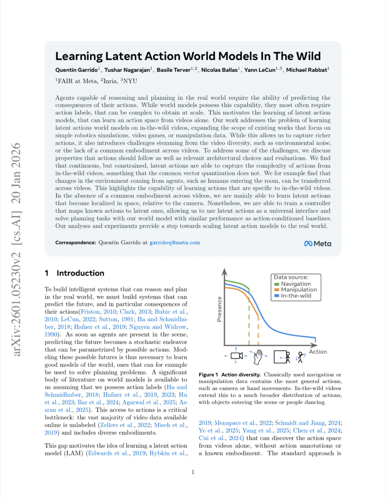
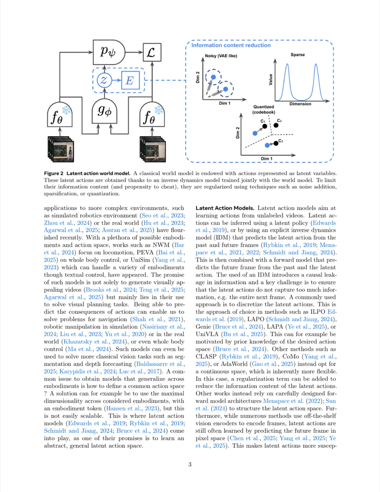
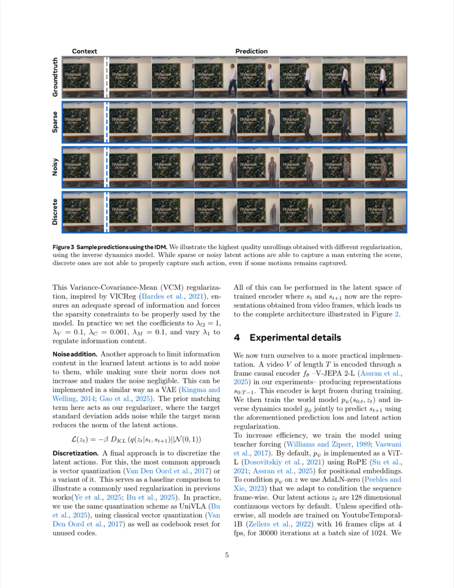
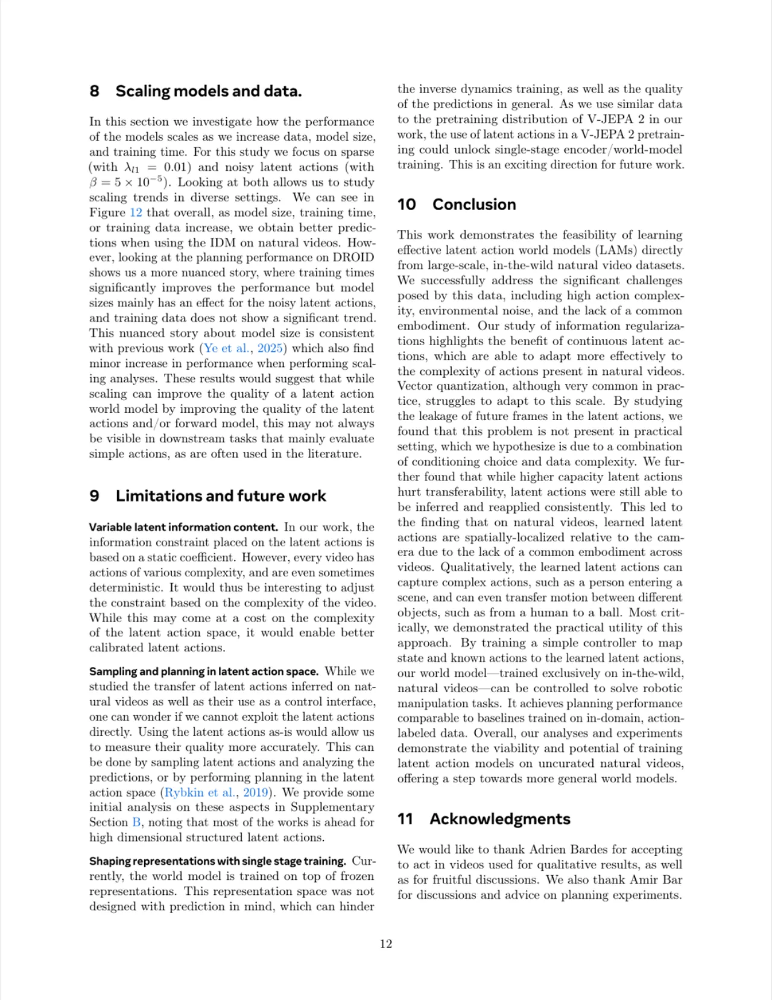

世界模型需要动作标注才能预测未来，但大规模视频数据几乎没有标注。本文研究如何在多样化的真实世界（in-the-wild）视频上训练潜在动作世界模型（LAM），无需任何动作标签。研究发现，连续且受约束的潜在动作能够有效捕捉复杂动作，而常用的向量量化方法在此场景下表现不佳；同时，通过训练轻量级控制器将已知动作映射到潜在动作，LAM 可用于机器人操作和导航的视觉规划任务。
智能体要在现实世界中推理与规划，必须能够预测动作的后果。现有世界模型大多依赖动作标注——而大规模视频数据几乎没有标签。这催生了潜在动作模型（Latent Action Model, LAM）的研究方向：从视频本身学习动作空间，无需任何显式动作标注。
"To learn a truly general and transferable latent action world model, we argue that we must go beyond these targeted data sources. Sources of natural in-the-wild videos such as HowTo100M or YoutubeTemporal-1B provide a much richer and general learning environment than usually studied."
以往 LAM 工作大多局限于视频游戏、桌面机械臂操作等窄领域，泛化性受限。真实世界视频（in-the-wild）涵盖更丰富的动作分布——摄像机运动、人员进入画面、物体变化等——提供了学习通用动作空间的机会，同时也带来了新挑战：视频多样性导致的环境噪声、不同视频间缺乏统一具身形式（embodiment）。

本文采用标准的逆动力学模型（IDM）+ 世界模型（前向模型）联合训练框架，并系统研究如何在真实世界视频上约束潜在动作的信息量，以避免编码冗余噪声。
给定视频帧序列 s0:T，首先使用冻结的 V-JEPA 2-L 编码器将每帧映射为抽象表示。IDM gφ 以过去帧与未来帧为输入，输出潜在动作 zt = gφ(st, st+1)；世界模型 pψ（实现为 ViT-L + RoPE 位置编码，以 AdaLN-zero 接受 zt 条件）预测下一帧 st+1。两者联合以 L1 预测损失优化：Lt = ‖st+1 − pψ(s0:t, zt)‖1。训练使用 teacher forcing。

潜在动作的核心挑战是防止 IDM 将未来帧完整编码进 zt（"cheating"）。本文研究三种策略，各有优劣：
对潜在动作施加 L1 正则项，辅以 VCM（Variance-Covariance-Mean）正则化防止模式坍缩。参数 λl1 控制约束强度。优点：可灵活调节容量；缺点：实现相对复杂。
类似 VAE 的 KL 散度正则：L(zt) = −β DKL(q(zt|st, st+1) ‖ N(0,1))。通过目标标准差添加噪声、目标均值降低 zt 范数。β 参数调节信息容量。
使用向量量化（VQ）将连续向量离散化为 codebook 编码，与 UniVLA 相同的量化方案。这是 Genie、LAPA、UniVLA 等主流方法的选择，本文将其作为对照基线。
为将 LAM 用于规划，训练一个轻量级控制器，将已知动作映射到潜在动作。仅用动作时采用 MLP；结合过去表示时采用基于 cross-attention 的 adapter，以处理潜在动作与相机位置相关的问题。
所有模型在 YoutubeTemporal-1B 上训练（16帧片段，4fps，batch size 1024，30k 迭代），评测涵盖：IDM 预测误差（LPIPS）、未来帧泄漏（scene cut）、动作迁移（cycle consistency）、具身特性分析，以及下游规划性能（DROID 机械臂操作 / RECON 导航）。

稀疏和噪声潜在动作通过调节超参数（λl1 或 β），可在无约束连续动作（最低误差）与纯确定性世界模型（最高误差）之间灵活权衡，形成连续的容量谱系。而向量量化方法难以提升容量，始终靠近确定性基线，"the vector quantization based approach struggles to scale its capacity and remains very close to the deterministic baseline."
| 正则化方式 | 容量 | 无场景切换（LPIPS） | 有场景切换（LPIPS） | 倍率 |
|---|---|---|---|---|
| Sparse | Low | 0.28 | 0.66 | ×2.3 |
| Sparse | High | 0.20 | 0.50 | ×2.4 |
| Noisy | Low | 0.33 | 0.69 | ×2.1 |
| Noisy | High | 0.21 | 0.54 | ×2.5 |
| Discrete | Low | 0.34 | 0.69 | ×2.0 |
| Discrete | High | 0.29 | 0.68 | ×2.3 |
所有模型在场景切换时预测误差均翻倍以上，表明没有模型通过编码整个未来帧来"作弊"。数据集本身的复杂性使此类捷径难以习得。
在 Kinetics（人类活动视频）和 RECON（导航）上，将视频 A 的潜在动作迁移至视频 B 再反推，cycle consistency 误差增幅极小（约 ×1.03 ~ ×1.34），证明潜在动作具有跨视频迁移性，且此迁移并非来自未来帧泄漏。
定性分析（Figure 7/8）：可将"一人向左行走"的动作迁移至"飞行球"，球随即向左运动；还能仅对画面中空间位置最近的人施加动作，体现出空间局部性——"due to a lack of common embodiment in natural videos, the model learns generic actions that are applied relative to the camera."
通过训练控制器，LAM 可用于 DROID（Franka Emika Panda 机械臂）和 RECON（户外导航）上的视觉规划任务，采用 CEM 在 H=3 步规划。关键结论：

本文中潜在动作的信息约束系数（如 λl1、β）在训练期间固定不变。然而不同视频中动作复杂程度差异很大，有些片段甚至是确定性的。未来工作应根据视频复杂度动态调整约束，实现更好校准的潜在动作，尽管这可能增加潜在动作空间的复杂性。
本文主要研究将已知动作映射到潜在动作（控制器方案），而非直接在潜在动作空间内采样规划。作者承认"most of the work is ahead for high dimensional structured latent actions"，直接利用潜在动作进行规划（如 Rybkin et al., 2019 的方法）仍是开放问题。
世界模型训练在冻结的 V-JEPA 2 表示之上进行，而该表示空间并非针对预测设计。这可能制约逆动力学模型训练质量及预测精度。若能将潜在动作引入 V-JEPA 2 预训练（单阶段编码器/世界模型联合训练），可能带来显著提升——作者视之为"an exciting direction for future work."
实验发现，unrolling 视觉质量（LPIPS）与规划性能（Δxyz / RPE）之间的相关性较弱——规划最好的模型往往并非视频生成最清晰的模型。这一"common challenge in the world model literature"意味着评估指标的选择对 LAM 研究结论至关重要。